物联网管家机器人零入门设计
###物联网管家机器人零入门设计
设计思路：
在科技迅速发展的今天，生活压力的增加，人们渴望追求更优越的生活条件，所以加班的现象越来越普遍。那么当你不在家并且家里没人的时候，如果家里失火、煤气忘关，或者说管道漏水等。如何能够实时的了解家中的情况，并且能够在最短速度内报警，把损失降低到最小，显得尤为重要。因此，萌发了做一款可移动侦测采集室内数据的智能小车。功能介绍：
室内环境复杂，为了保证小车不撞到障碍。使用单片机控制超声波测距，对环境障碍进行180度探测，寻找最优路径实现避障功能。假如需要小车实现多点定点检测，那么只需规划出特殊的路线，利用红外检测路线，实现自动巡航功能。传感器采集回来的数据，由MCU简单处理后，通过网络设备无线上传到“云”服务器，用户可以在电脑端，手机端查看小车移动采集的数据。当采集回来的数据，超出正常值时，可以触发“报警”功能。搭载害气体传感器接口，烟雾粉尘传感器，可实现有害气体（煤气）泄露报警，室内粉尘检测。小车采用wifi联网，为了解决大多数非专业用户在不懂编程的情况下依然能正常使用，小车采用Airkiss技术，用户可以在手机端通过微信或者特定APP就可以实现正常配网。第三方API接入展示功能设计：
鉴于智能小车行动灵活的特点，在车上搭载功能外设（如温湿度计，烟雾粉尘检测模块，有害气体传感器等设备），就可以实现灵活多点数据采集，实现多点测温，火灾预警，PM2.5空气质量分析，有害气体泄露报警等功能。 本指南以嵌入式常用传感器为例，目的为初学者提供一个较为全面开发例程。硬件介绍：
- 智能小车主控以stm32f103系列MCU为例（其他芯片参考移植），这里使用中国移动麒麟座开发板进行设计（感谢中移硬件赞助）。
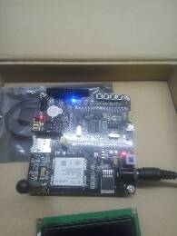
- 智能小车主控以stm32f103系列MCU为例（其他芯片参考移植），这里使用中国移动麒麟座开发板进行设计（感谢中移硬件赞助）。
麒麟座采用stm32f103ret6芯片为主控芯片，搭载了GSM模块 WiFi模块和温湿度传感器，角度传感器等部件，是一款功能较为齐全的硬件开发平台，出于尽可能丰富外设，做一款较完善的教程的考虑，使用麒麟开发板可以节约空间，方便添加跟多外设。
2.使用E18-D80NK 红外接近开关，用于对障碍物进行检测，触发中断执行避障机制。
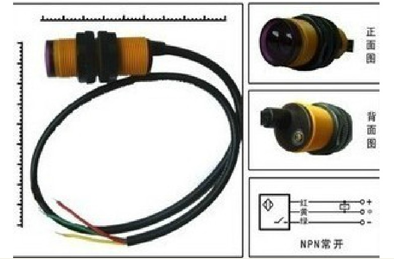3.使用PM2.5传感器 GP2Y1014AU粉尘传感器，用于对空气中大于0.8um的颗粒物浓度进行检测。
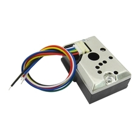4.夏普光学灰尘传感器（GP2Y1014AU0F）在检测非常细的颗粒，如香烟烟雾，是特别有效的，并且是常用的空气净化器系统。该装置中，一个红外发光二极管和光电晶体管，对角布置成允许其检测到在空气中的灰尘反射光。传感器中心有个洞可以让空气自由流过，定向发射LED光，通过检测经过空气中灰尘折射过后的光线来判断灰尘的含量。这里通过读取输出脚的模拟电压来判读颗粒浓度，用到stm32 内部ADC转换。
1
2
3
4
5
6
7
8
9
10
11
12
13
14
15
16
17
18
19
20
21
22
23
24
25
26
27
28
29
30
31
32
33
34
35
36
37
38
39
40
41
42
43
44
45
46
47
48
49
50
51
52
53
54
55
56
57
58
59
60
61
62
63
64
65
66
67
68/*************************************************************************************
ADC1初始化程序 PB1口用于LED信号触发
*************************************************************************************/
void Adc_Init(void)
{
ADC_InitTypeDef ADC_InitStructure;
GPIO_InitTypeDef GPIO_InitStructure;
RCC_APB2PeriphClockCmd(RCC_APB2Periph_GPIOA | RCC_APB2Periph_ADC1 | RCC_APB2Periph_GPIOB , ENABLE );
RCC_ADCCLKConfig(RCC_PCLK2_Div6);
GPIO_InitStructure.GPIO_Pin =GPIO_Pin_1;
GPIO_InitStructure.GPIO_Mode = GPIO_Mode_AIN;//
GPIO_Init(GPIOA, &GPIO_InitStructure); //
ADC_DeInit(ADC1); //
ADC_InitStructure.ADC_Mode = ADC_Mode_Independent; //
ADC_InitStructure.ADC_ScanConvMode = ENABLE; //
ADC_InitStructure.ADC_ContinuousConvMode =DISABLE; //
ADC_InitStructure.ADC_ExternalTrigConv = ADC_ExternalTrigConv_None;//
ADC_InitStructure.ADC_DataAlign = ADC_DataAlign_Right; //ADC
ADC_InitStructure.ADC_NbrOfChannel = 1; //
ADC_Init(ADC1, &ADC_InitStructure); //
ADC_Cmd(ADC1, ENABLE); //
ADC_ResetCalibration(ADC1); //
while(ADC_GetResetCalibrationStatus(ADC1)); //
ADC_StartCalibration(ADC1); //
while(ADC_GetCalibrationStatus(ADC1)); //
GPIO_InitStructure.GPIO_Pin = GPIO_Pin_1;
GPIO_InitStructure.GPIO_Speed = GPIO_Speed_50MHz;
GPIO_InitStructure.GPIO_Mode = GPIO_Mode_Out_OD;
GPIO_Init(GPIOB, &GPIO_InitStructure);
GPIO_SetBits(GPIOB, GPIO_Pin_1 );
}
/*******************************************************************
得到 ADC单通道多次平均值
ch=通道 S为规则序列 time=n次读取求平均值
*******************************************************************/
u16 Get_Adc_Average(u8 ch,u8 s,u8 times)
{
float temp_val=0;
float pm;
u8 t;
u8 z=0;
for(t=0;t<times+z;t++)
{
GPIO_SetBits(GPIOB, GPIO_Pin_1 );
GPIO_ResetBits(GPIOB, GPIO_Pin_1);
delay_us(40);
if(Get_Adc(ch,s)>300)
{
temp_val+=Get_Adc(ch,s);
}
else
{
z++;
if(z>100)
return 0;
}
delay_us(280);
GPIO_SetBits(GPIOB, GPIO_Pin_1 );
delay_us(9680);
}
temp_val=temp_val/times;
return temp_val;
}5.模块 MQ-5液化气天然气 城市煤气传感器模块：检测燃气是否泄露
MQ-5有两个输出信号脚，一个是数字输（0,1）另一个是模拟输出，数字输出可以通过调节灵敏度来设置物理阀值，相对模拟输出来说 数字输出简单，可直接通过MCU端口检测，但数字输出不精确不直观，本次仍然以模拟信号进行ADC转化，通过程序判断具体燃气浓度，具体ADC配置思路同上。通过串口调试得到的数据如下：
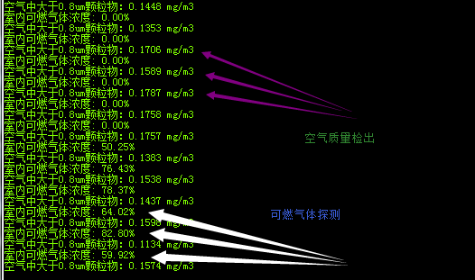6.火焰传感器模块 火源探测模块 ：用于检测室内是否有明火.该模块也有数字信号输出脚和模拟信号输出脚，但由于stm32f103只有3个ADC,火焰检测采集模拟量意义不大，所以直接用的是数字信号输出脚，将其配置成外部中断。也可以不用中断直接检测引脚电压来判断是否有明火。
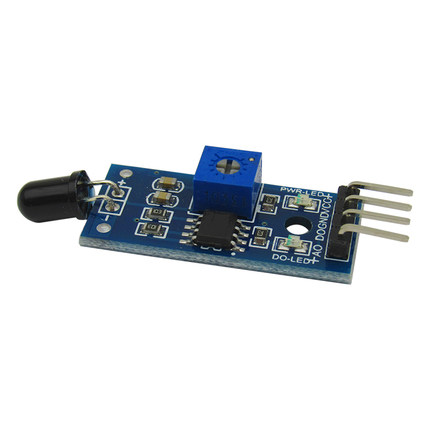7.SPI接口的 oled液晶显示屏:Oled显示屏直接使用厂家提供的官方驱动源码就行，没必要去研究它具体寄存器操作方式。我们只需学会使用IIC协议 或SPI协议能给屏幕发送指令就可以了。具有协议不在赘述，网上有很多，而且协议是固定通用的。
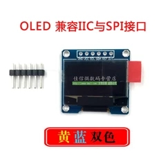8.RCWL-0516 微波雷达感应开关模块:用来进行人体感应，在设备开启离家模式时，如果感应到人，则会触发报警。
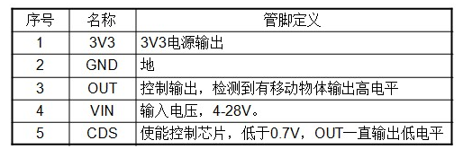
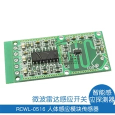9.串口控制插卡SD卡语音模块：用于语音播报
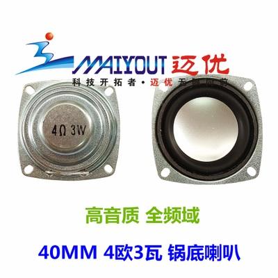
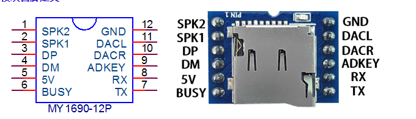
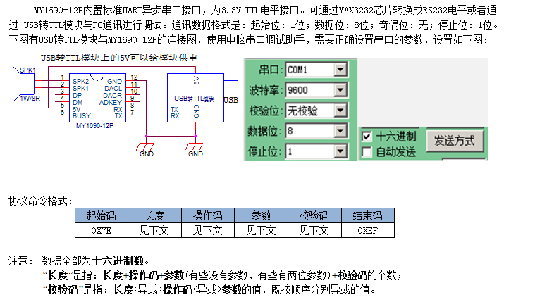1
2
3
4
5
6void Usart1_Init(unsigned int baud)
{
GPIO_InitTypeDef gpioInitStruct;
USART_InitTypeDef usartInitStruct;
NVIC_InitTypeDef nvicInitStruct;
}定义： uint8_t stop[]={0x7e,0x03,0x1e,0x1d,0xef,0x00}; //停止命令
串口输出： printf（stop）；
注：前提是串口重定义过，才能使用printf函数。（网上搜索串口重定义的相关知识，） 否则 直接使用stm32f10x标准库里面的USART_SendData();函数进行逐个字节输出.
- 10 .舵机：一种角度电机，可以精确控制转动角度:舵机通过控制器发送不同占空比的PWM来改变它转动的角度，每个角度对于一个特定的频率的PWM，关于stm32 pwm的配置如下.
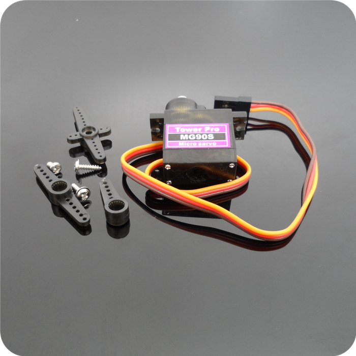通过库标准函数改变舵机转动角度：TIM_SetCompare3(TIM4,1870); TIM_SetCompare4(TIM4,1880)；1
2
3
4
5
6
7
8
9
10
11
12
13
14
15
16
17
18
19
20
21
22
23
24
25
26
27
28
29
30
31void TIM4_PWM_Init(u16 arr,u16 psc)
{
GPIO_InitTypeDef GPIO_InitStructure;
TIM_TimeBaseInitTypeDef
TIM_TimeBaseStructure;
TIM_OCInitTypeDef TIM_OCInitStructure;
RCC_APB1PeriphClockCmd(RCC_APB1Periph_TIM4, ENABLE);
RCC_APB2PeriphClockCmd(RCC_APB2Periph_GPIOB | RCC_APB2Periph_AFIO, ENABLE);
GPIO_InitStructure.GPIO_Pin = GPIO_Pin_8 | GPIO_Pin_9;
GPIO_InitStructure.GPIO_Mode = GPIO_Mode_AF_PP;
GPIO_InitStructure.GPIO_Speed = GPIO_Speed_10MHz;
GPIO_Init(GPIOB, &GPIO_InitStructure);
TIM_TimeBaseStructure.TIM_Period = arr;
TIM_TimeBaseStructure.TIM_Prescaler =psc;
TIM_TimeBaseStructure.TIM_ClockDivision = 0;
TIM_TimeBaseStructure.TIM_CounterMode = TIM_CounterMode_Up;
TIM_TimeBaseInit(TIM4, &TIM_TimeBaseStructure);
TIM_OCInitStructure.TIM_OCMode = TIM_OCMode_PWM2;
TIM_OCInitStructure.TIM_OutputState = TIM_OutputState_Enable;
TIM_OCInitStructure.TIM_OCPolarity = TIM_OCPolarity_High;
TIM_OC3Init(TIM4, &TIM_OCInitStructure);
TIM_OCInitStructure.TIM_OCMode = TIM_OCMode_PWM2;
TIM_OCInitStructure.TIM_OutputState = TIM_OutputState_Enable;
TIM_OCInitStructure.TIM_OCPolarity = TIM_OCPolarity_High;
TIM_OC4Init(TIM4, &TIM_OCInitStructure);
TIM_OC3PreloadConfig(TIM4, TIM_OCPreload_Enable);
TIM_OC4PreloadConfig(TIM4, TIM_OCPreload_Enable);
} - 直流电机驱动模块：模块用于驱动TT马达，输入信号同样是PWM 配置方式与舵机相同，操作方式如上图所示。选用这块模块优点 是芯片模块比晶体管模块发热小，缺点是占用控制芯片管脚多（4路PWM)
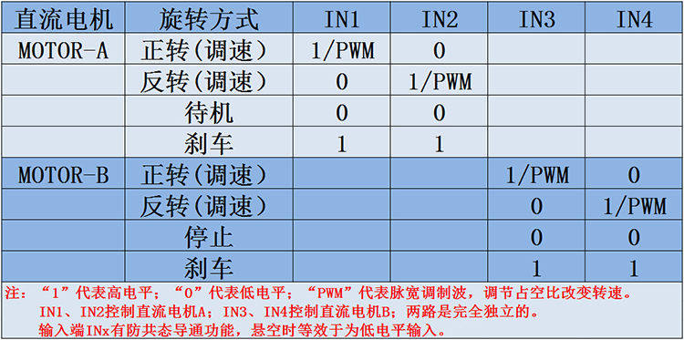
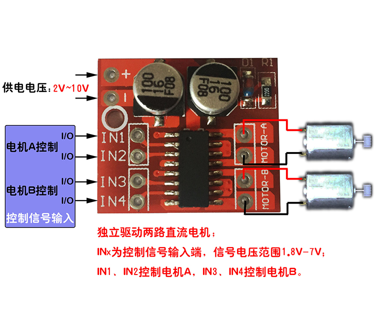
- 直流电机驱动模块：模块用于驱动TT马达，输入信号同样是PWM 配置方式与舵机相同，操作方式如上图所示。选用这块模块优点 是芯片模块比晶体管模块发热小，缺点是占用控制芯片管脚多（4路PWM)
- 12.超声波测距模块
- 采用IO触发测距，给至少10us的高电平信号;
- 模块自动发送8个40khz的方波，自动检测是否有信号返回；
- 有信号返回，通过IO输出一高电平，高电平持续的时间就是
超声波从发射到返回的时间．测试距离=(高电平时间*声速(340M/S))/2;1
2
3
4
5
6
7
8
9
10
11
12
13
14
15
16
17
18
19
20
21
22
23
24
25
26
27
28
29
30
31
32
33
34
35
36
37
38
39
40
41
42
43
44
45
46
47
48
49
50
51
52
53
54
55
56
57
58
59
60
61
62
63
64
65
66
67
68
69
70
71
72
73
74
75
76
77
78
79
80
81
82
83
84
85
86
87
88
89
90
91
92
93//超声波测距用到stm32定时器输入捕获功能配置过程如下：
/*********************************************************
初始化定时器2为捕获模式
********************************************************/
void TIM2_Cap_Init(u16 arr,u16 psc)
{
TIM_ICInitTypeDef TIM2_ICInitStructure;
GPIO_InitTypeDef GPIO_InitStructure;
TIM_TimeBaseInitTypeDef TIM_TimeBaseStructure;
NVIC_InitTypeDef NVIC_InitStructure;
RCC_APB1PeriphClockCmd(RCC_APB1Periph_TIM2, ENABLE);
RCC_APB2PeriphClockCmd(RCC_APB2Periph_GPIOA | RCC_APB2Periph_AFIO, ENABLE);
GPIO_InitStructure.GPIO_Pin = GPIO_Pin_0 ;
GPIO_InitStructure.GPIO_Mode = GPIO_Mode_IPD; //PA0 ÊäÈë
GPIO_Init(GPIOA, &GPIO_InitStructure);
GPIO_ResetBits(GPIOA,GPIO_Pin_0);
TIM_TimeBaseStructure.TIM_Period = arr;
TIM_TimeBaseStructure.TIM_Prescaler =psc;
TIM_TimeBaseStructure.TIM_CounterMode = TIM_CounterMode_Up;
TIM_TimeBaseInit(TIM2, &TIM_TimeBaseStructure);
TIM2_ICInitStructure.TIM_Channel = TIM_Channel_1;
TIM2_ICInitStructure.TIM_ICPolarity = TIM_ICPolarity_Rising;
TIM2_ICInitStructure.TIM_ICSelection = TIM_ICSelection_DirectTI;
TIM2_ICInitStructure.TIM_ICPrescaler = TIM_ICPSC_DIV1;
TIM2_ICInitStructure.TIM_ICFilter =0x00;
TIM_ICInit(TIM2, &TIM2_ICInitStructure);
NVIC_InitStructure.NVIC_IRQChannel = TIM2_IRQn; NVIC_InitStructure.NVIC_IRQChannelPreemptionPriority = 2;
NVIC_InitStructure.NVIC_IRQChannelSubPriority = 0;
NVIC_InitStructure.NVIC_IRQChannelCmd = ENABLE;
NVIC_Init(&NVIC_InitStructure);
TIM_ITConfig(TIM2,TIM_IT_Update|TIM_IT_CC1,ENABLE);//ÔÊÐí¸üÐ
TIM_Cmd(TIM2,ENABLE );
}
/*************************************************************
定时器2中断服务程序
*************************************************************/
void TIM2_IRQHandler(void)
{
if((TIM2CH1_CAPTURE_STA&0X80)==0)
{
if(TIM_GetITStatus(TIM2, TIM_IT_Update) != RESET)
{
if(TIM2CH1_CAPTURE_STA&0X40)
{
if((TIM2CH1_CAPTURE_STA&0X3F)==0X3F)
{
TIM2CH1_CAPTURE_STA|=0X80;
TIM2CH1_CAPTURE_VAL=0XFFFF;
}else TIM2CH1_CAPTURE_STA++;
}
}
if(TIM_GetITStatus(TIM2, TIM_IT_CC1) !=
{
if(TIM2CH1_CAPTURE_STA&0X40)
{
TIM2CH1_CAPTURE_STA|=0X80;
TIM2CH1_CAPTURE_VAL=TIM_GetCapture1(TIM2);
TIM_OC1PolarityConfig(TIM2,TIM_ICPolarity_Rising);
}else
{
TIM2CH1_CAPTURE_STA=0;
TIM2CH1_CAPTURE_VAL=0;
TIM2CH1_CAPTURE_STA|=0X40;
TIM_SetCounter(TIM2,0);
TIM_OC1PolarityConfig(TIM2,TIM_ICPolarity_Falling);
}
}
}
TIM_ClearITPendingBit(TIM2, TIM_IT_CC1|TIM_IT_Update);
TIM2_1CAP();
}
/***********************************************************
距离转化函数
***********************************************************/
void TIM2_1CAP()
{
if(TIM2CH1_CAPTURE_STA&0X80)
{
temp=TIM2CH1_CAPTURE_STA&0X3F;
temp*=65536;
temp+=TIM2CH1_CAPTURE_VAL;
temp=temp*17;
z=temp/1000;
TIM2CH1_CAPTURE_STA=0;
}
} - 13.硬件材料
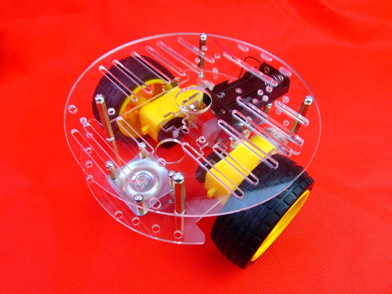
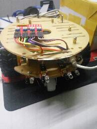
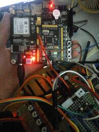
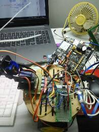 - 14.硬件部分介绍完毕，程序部分也穿插在其中一并说了。现在，来看下onenet web应用部分，具体onenet web应用部分如何设计，我就不在多说，论坛里都能找到，我只说论坛里没用的
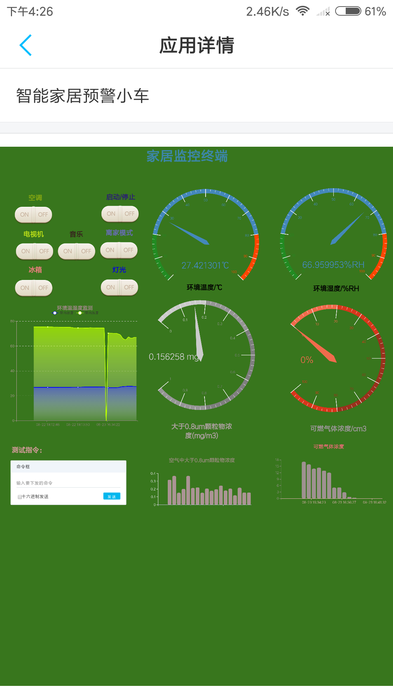
本次设计用stm32f103接入onenet EDP服务器 和第三方服务器，这是结构简图：
这是室内可燃气体泄露触发的报警：
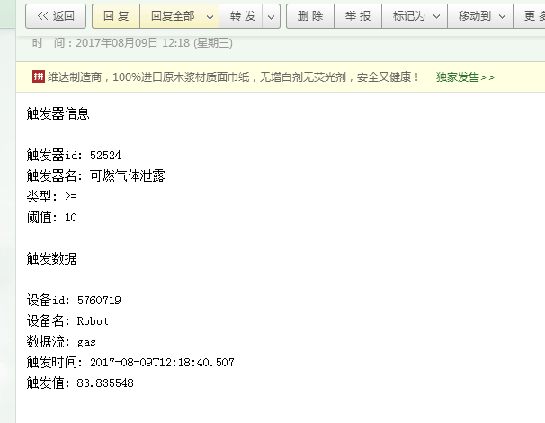
这是获取第三方网站本地气象数据效果：